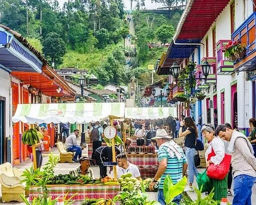
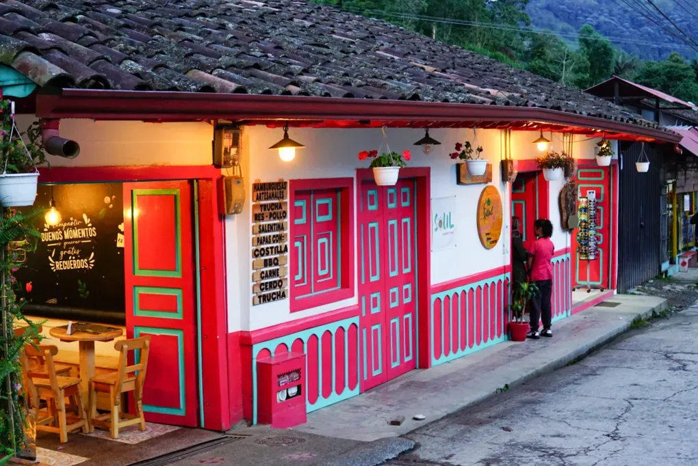
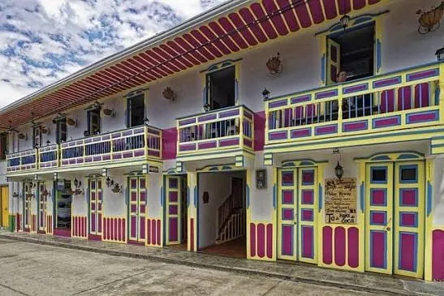

Recorrido Cultural Casco Histórico
Caminata guiada de 2.5 horas por las calles empedradas de Salento donde la arquitectura colonial se mezcla con el legado cafetero: desde la Plaza de Bolívar hasta los miradores ocultos, pasando por la iglesia neogótica, las casonas de balcones de madera y las tiendas de artesanos que mantienen vivas las tradiciones del Quindío.
Conoce la experiencia
✓ Información verificada en el catálogo local
Este recorrido cultural te sumerge en 200 años de historia del Quindío. Comenzando en la Plaza de Bolívar, el guía local te revela los secretos de la arquitectura colonial: cómo los balcones de madera resistieron los terremotos, por qué las fachadas de colores representan la identidad del municipio y cómo el café transformó una pequeña aldea en el destino turístico más fotogénico de Colombia. La caminata incluye degustación de café de especialidad en una cafetería histórica y acceso a miradores ocultos que solo los locales conocen.
Galería de imágenes

.webp)


.webp)
.webp)
.webp)
.webp)
.webp)

Antes de confirmar tu visita
¿Cuál es el horario de Recorrido Cultural Casco Histórico? Acceso libre 24 horas
¿Cuánto cuesta? Rango Gratis. Confirma la tarifa final con el local.
¿Cómo reservo? Contacto directo por WhatsApp, sin intermediarios ni comisiones.
Lo que puedes encontrar
Preguntas frecuentes
¿Qué es el Recorrido Cultural?
Caminata guiada por el casco histórico de Salento: Plaza de Bolívar, Calle Real, iglesia, miradores, cafeterías históricas y arquitectura colonial.
¿Cuánto cuesta?
Tour guiado: $30.000 por persona. Duración: 2.5 horas. Grupo máximo 15 personas.
¿Cómo reservo?
Contactar a la Oficina de Turismo en la Plaza de Bolívar o al WhatsApp del operador.
¿Qué veo?
Historia de Salento, arquitectura colonial, leyendas locales, proceso del café, artesanías. Muestras de café y chocolate incluidas.
¿Horario?
Martes a sábado, 9:00 AM y 2:00 PM. No operan domingos.
Qué hacer cerca
Consejos para tu visita
Consejo: Reserva 24h antes.
Grupo: Mínimo 4 personas.
✓ Información verificada en el catálogo local